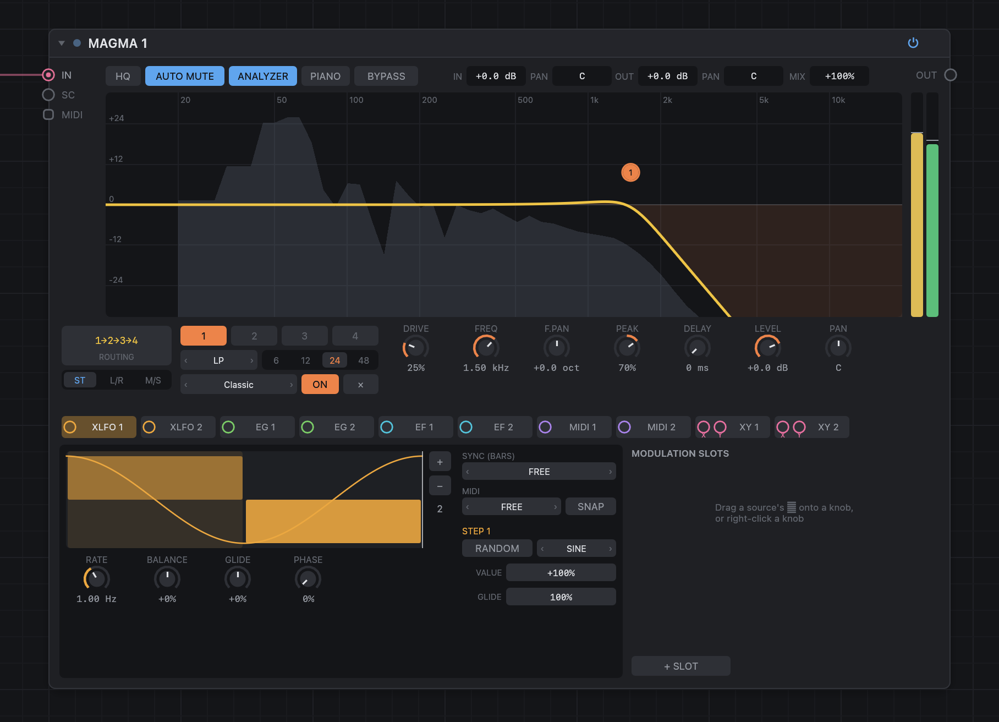
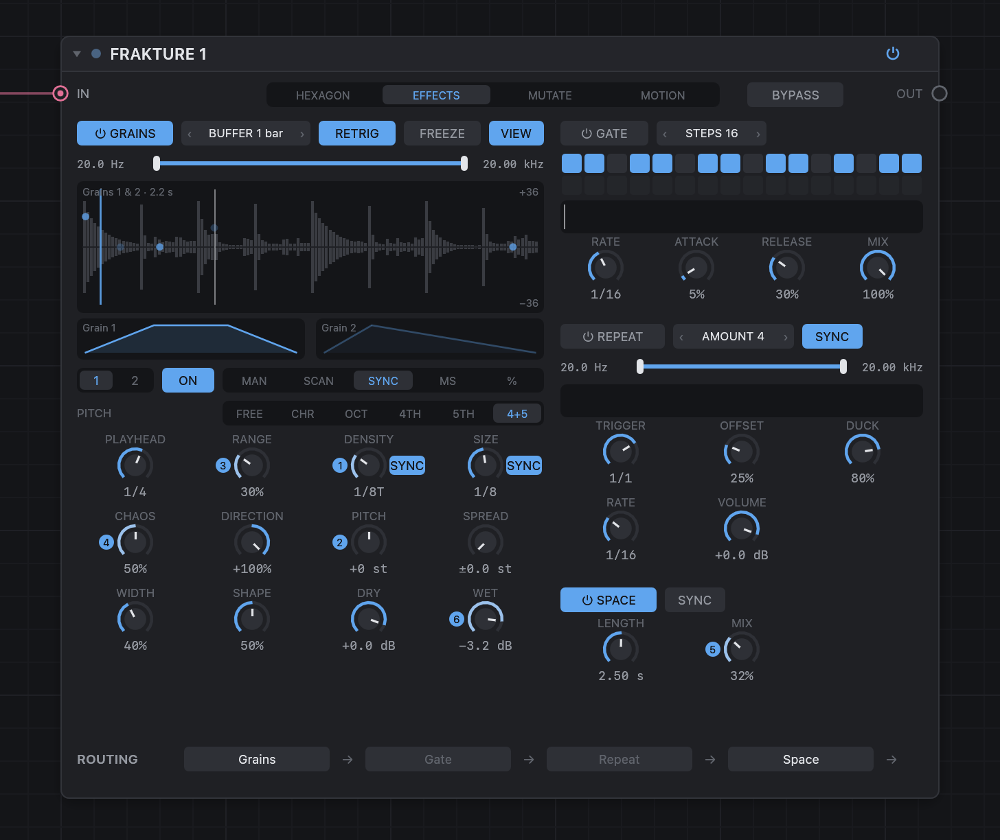
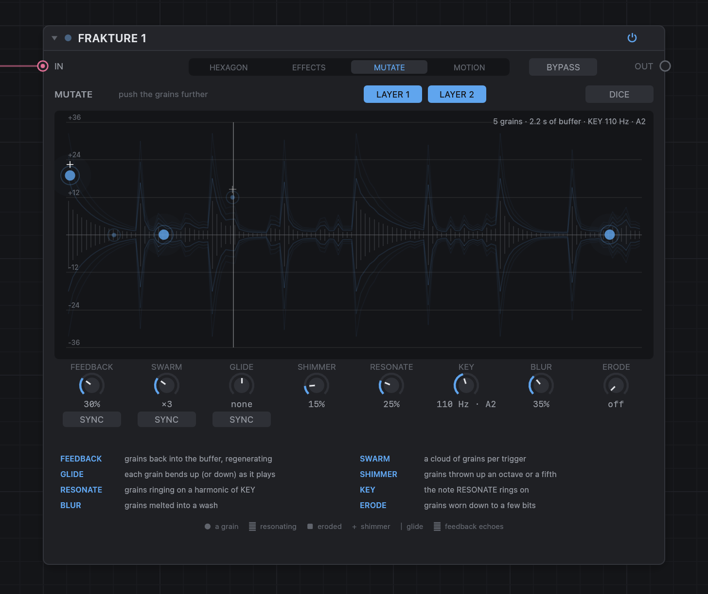
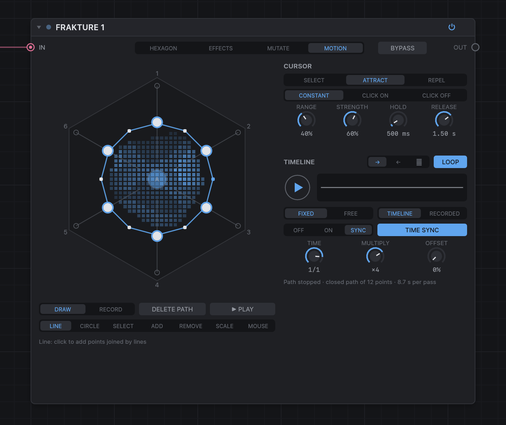
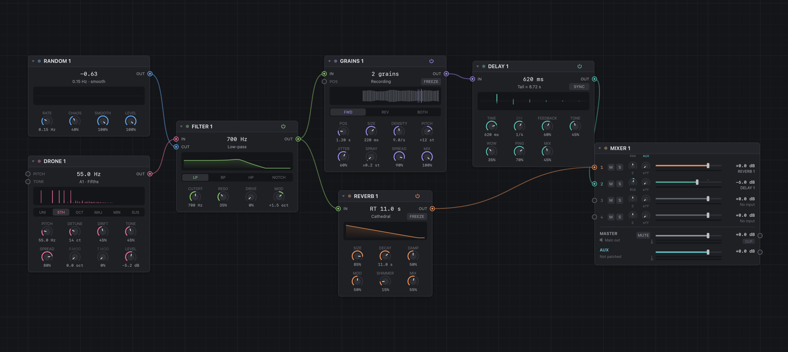

Small blocks joined by virtual cables generate sound in real time, in the spirit of Max/MSP and Pure Data. Made for ambient sounds, drones, organic and granular textures, with drum machines, generative MIDI, visuals that react to the sound and your VST3 and Audio Unit plugins on the same board.
Every node is a small panel on an endless canvas, with its own knobs, displays and ports. Cables carry sound and MIDI between them, and the whole board plays in real time.
Palette×
01
Drop nodes
Drag a source, an effect or a sequencer from the palette onto the canvas, or right-click anywhere. Thirty-three built-in nodes, your saved modules and every installed plugin, VST3 or Audio Unit, are there.
Cables×
02
Patch cables
Drag from a port to another. Round ports carry stereo audio; square ports and dashed cables carry MIDI. Loops that would feed back are refused, and each input takes one cable.
Transport×
03
Press Start
Start (or Space) runs the transport: sources sound and sequencers run on one global clock. Stop ends the notes but lets echoes and reverb tails ring out.
02 · The instruments
Panels you can get lost in.
Some nodes are a knob or two. Others are whole instruments, each with a panel drawn for it: flat, graphic and alive while the board plays. Every picture on this site is rendered from the app itself.
SourcesDrum synth
Fjord
after the Clavia Nord Drum (2012)
A four-channel drum synthesizer with a step sequencer. Each channel blends a tone, a noise and a click, each with its own filter, sweep, decay and gate, then goes beyond the original with ADSRs for the tone.
Tone analog waves, drum bodies built from the modes of membranes and bars, and metal: bells, cowbell, gong.
Bank 99 programs drawn as a map, 34 factory programs in Real, Retro, Ethno and FX styles; STORE and Memory Protect.
ALEA throws new sounds and grooves bred from the factory programs, as far as CHANCE says, and BACK takes a throw back.
Steps four lanes of up to 32 steps, plus Trig audio inputs for drum replacement and MIDI in and out.
MIDI sequencesGenerative
Colloid
a generative MIDI node played by physics
A handpan's notes, or a chord's, become molecules floating in a liquid. While the transport plays, atoms fall towards them and strike them, and every strike plays the struck molecule's note, its velocity the force of the hit.
Notes nine handpan tunings (Kurd, Celtic, Amara, Integral, Hijaz, Pygmy, Akebono, Sabye, Aegean) or twelve chord shapes, on a root you pick from a row of keys.
Field attract, range, charge and bounce; Liquid viscosity, heat, flow and drift.
Hands on click the tank to push the liquid, drag to stir it, or play chords into it from a keyboard.
CC lanes four controllers driven by the tank: energy, density, speed, strike, swirl, charge.
SourcesRhythm box
Pops 66
in the spirit of the KORG Mini Pops-7 (1966)
No samples: its fifteen instruments are synthesized the way the original's circuits made them. Ringing resonators, square waves, filtered and gated noise, and a decaying rattle for the quijada.
Rhythms twenty, from Waltz and Bossanova to Rock 4 and Latin Swing, combined as the original's buttons did.
Three levels MACHINE, MIXER and EDITOR: the node grows with the detail you ask for.
Patterns eight user patterns of up to 32 sixteenths or triplets, painted on a grid.
Waveforms WAVE, BEND and DRIVE reshape every instrument, with a picture of the hit.
EffectsFilters

Magma
after FabFilter Volcano 3
Four hot, analog-flavoured filters with a side chain and a MIDI input. Each drives its input through its own curve and saturates its resonance in its own way; most self-oscillate at the top of PEAK.
Filters eight shapes, 6 to 48 dB/oct, eleven non-linear styles from Classic and Tube to Metal and Extreme.
Routing six routings, from serial and parallel to pairs of pairs, on both channels, L/R or M/S.
Modulation XLFO, EG, EF, MIDI and XY sources: drag a handle onto almost any knob, up to sixteen slots.
Display drag the dots, with the spectrum and a piano along the scale.
SourcesAmbient
Aether
warm drones moved by fractal motion
Five voices hold a chord; each is two layers of eight partials that move on their own. Everything moves along one kind of curve, six octaves of smooth noise, so slow swells carry faster ripples at every time scale.
Chords 5th, sus, maj9, min9, min11, fourths, lydian or FREE; keys take over the chord.
Motion synced to 1 to 64 bars of the board's tempo, the same every Start until you RESEED.
Glitches glassy pings and CD-like skips, tuned to harmonics of the chord, ratcheted in time.
Warmth drive, chorus, a wide diffuse space and air tuned to the chord.
EffectsTape machine
Tape
after the classic tape emulation plugins
The sound is recorded, carried by a moving tape and played back: a record EQ, a magnetic curve on 2× oversampling, wow, flutter, dropouts, the head bump, gap loss and hiss.
Machines STUDIO, MASTER or CASSETTE, at 7½, 15 or 30 ips, on CLASSIC, MODERN or HOT tape.
Saturation tape's glue: quiet passages come up, loud ones are rounded, with even-harmonic warmth.
The deck reels turn at their real ratio, the tape sags with wow, the needles read input and output.
■ ▶ stop the tape and it slows to a halt, pitch falling; start it and it spins back up.
TextureGranular rhythm



Frakture
after Excite Audio's Motion: Fractal
A granular rhythm effect in four pages. A tempo-locked buffer feeds two grain layers, a trance gate, a stutter and a hall, in an order you drag; a hexagon of six macros moves it all, pushed by your mouse or by a path.
Effects grains with five playhead modes, gate of up to 32 steps, repeat, space.
Mutate feedback, swarm, glide, shimmer, resonate on a KEY, blur and erode.
Hexagon map any knob to a slider or to the input level; the mouse is a magnet.
Motion draw or record a path, and play it on a timeline in time with the board.
SourcesGenerative
Vesper
soundscapes, cinematic pads, chord progressions
Pick a root and a mood, and the engine writes the chords while five layers play them. There are no sample files: each sound is a recipe rendered into a looped sample on a thread of the node's own.
Moods sixteen seven-degree scales, from Radiant and Elegy to Temple and Cosmos; LOOP or EVOLVE.
Layers pad, bass, ambience, noise and shimmer, some forty sounds each, with motion filters.
Mix types CLEAN, DREAM, DUST and EDGE over the whole mix; twenty-eight scenes.
Score out chords, bass and shimmer go out as MIDI on three channels.
03 · The rest of the board
A wall of working panels.
Feedback drones, cellular-automaton melodies, Alva Noto-style glitches, a dynamic EQ and a 24-band one, a MIDI looper with eight scenes, visuals that dance to the mix. Click any panel to see it at full size.
Generators write melodies and chords; arpeggiators and loopers reshape them; instruments, Aether, Larsen and your VST3 and Audio Unit plugins play them. Every MIDI device is connected automatically, even one plugged in after launch, the transport can follow an external MIDI clock or send its own, and any MIDI node can drive a knob directly with MAP.
AudioBoard is a native Rust app (egui and eframe for the interface, cpal for audio, midir for MIDI). With a Rust toolchain installed, build and run it from the repository:
Run
$ cargo run --release
The ambient demo patch opens, stopped. Press Start in the toolbar, or Space, to hear it.
Fastest build, for large patches
$ cargo run --profile dist
Whole-program optimization: about 10–15% less audio CPU, for a few minutes more of compiling.

The demo patch · a Drone (fifths on A1) through a Filter moved by a Random, into a shimmering Reverb and, an octave up, a Granular cloud into a tape Delay
The interface and the sound live on separate threads, and the interface never blocks the audio.
Atomics knob values travel lock-free from the panels to the engine.
Commands nodes added or removed and new processing orders reach the engine on a channel, in a precomputed topological order.
Blocks built-in nodes run in 64-frame stereo blocks, so MIDI timing and modulation stay fine-grained; a plugin gets the whole buffer in one call, its MIDI events at their exact offsets.
No frees removed nodes and old orders go back to the UI thread to be freed: freeing a delay line inside the callback could click.
Fast maths denormals flushed to zero; sine, exp2, log2 and tanh approximated within 1e-6.